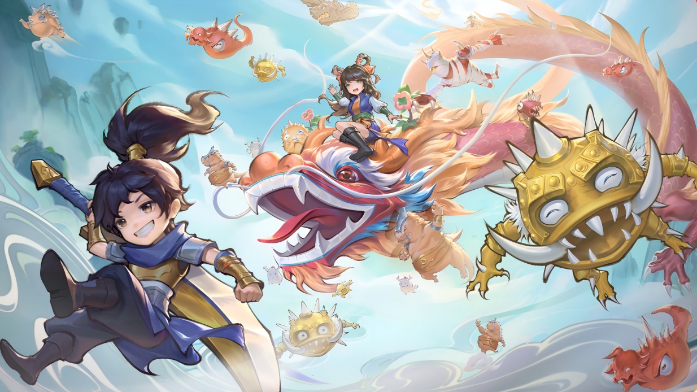

小程序项目锚定端手游流失用户与IP情怀用户，在公测阶段需通过营销手段快速聚拢IP用户，建立初始用户池与社区氛围。
聚焦35-55岁男性情怀用户，围绕老玩家回归这一核心情绪，构建四环联动的传播策略：PV情怀唤醒、KOC口碑扩散、社区情绪发酵、主播一对一转化；通过这套链路将传播数据转化为游戏行为。
公测PV播放量 90W+，抖音话题播放 125W+，UGC创作超 800条，成功引爆小程序首发热度。